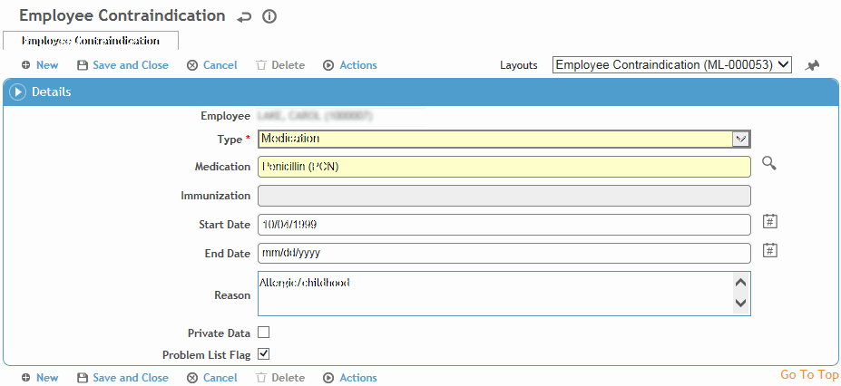

Medication contraindications can be recorded in the Demographics, Body Fluid Exposure, Medical Chart, Clinic Visits, or Immunization modules. The Rx tab in each of these modules displays all of the employee’s contraindications in date-descending order, regardless of where they were entered. If an immunization, allergy, or medication that is referenced in the ClinicVisitContraindications table is added to the employee record, the contraindication is automatically created for the employee.
On the Rx tab, in the lower section, click a link to edit an existing contraindication, or click New.

Select the immunization or medication that presents a contraindication.
Enter the start and end dates and any notes related to the medication/vaccine.
Indicate if the contraindication should be included on the Problem List (see Working with the Problem List).
Click Save.